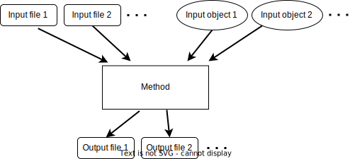
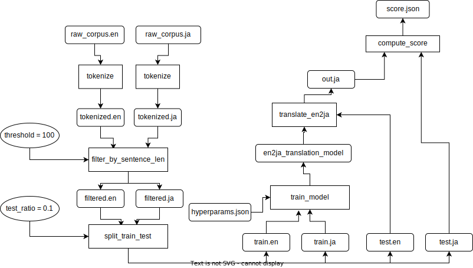

JTCMake Tutorial
JTCMake is a general purpose incremental build framework.
It shares the essence with Makefile:
Users define a set of rules to make files
JTCMake analyzses the dependency of the rules and executes them in an appropriate order, skipping ones whose outputs already exist and are up-to-date
Furthermore, JTCMake has strong features such as
- Content-based Skippability Check
In addition to the modification-time-based skippability check, JTCMake can be configured to check if a rule is skippable based on the input files’ content modification.
- Expressiveness and Portability
you can leverage Python’s expressiveness to write rules with complex logic and the code ships with different platforms including Windows.
- Structured rule management
JTCMake manages rules in a well structured manner, which enables intuitive handling of a large number of files spanning a deep directory tree.
- Fine-grained static typing
The API design has been tuned to fit into the Python ecosystem around static typing. Major operations on rules and files in your coding would be aided by your IDE and validated by static type checkers (Pyright/Pylance is recommended but Mypy should work too).
Combined with the structured rule management, this feature enables you to write a large and complex program safely and efficiently.
- Peripheral Equipment
Convenient tools such as a dependency graph visualizer and node selectors are provided.
Installation
$ pip install jtcmake
Additionally, Graphviz executables need to be in PATH when you use the
jtcmake.print_graphviz() function.
Overview
Typical workflow using JTCMake consists of three steps:
Create a group tree and define rules as nodes in the tree
Call
make()on a sub-tree (or the root) to execute rules there
Example: Writing to a file
Our first example task is to write “Hello!” into output/hello.txt.
For this task, we would write a Makefile below:
outputs/hello.txt:
mkdir -p $$(dirname $@) # make directory for hello.txt
echo "Hello!" > $@ # write to hello.txt
and then call $ make. Its JTCMake counterpart looks like:
from pathlib import Path
from jtcmake import UntypedGroup, SELF
# 1. Define a group tree
# Create the root node
g = UntypedGroup("output")
# Define a rule node
g.add("hello.txt", Path.write_text)(SELF, "Hello!")
# 2. Make the whole tree
g.make()
assert Path("output/hello.txt").read_text() == "Hello!"
You will see the following log after running g.make()
Make hello write_text( path = PosixPath('output/hello.txt'), text = 'Hello!', )
Done hello
On Jupyter Notebook and Jupyter Lab, Paths are printed as HTML links so you can quickly review the files.
This example task is so simple that you actually don’t need a “framework” and just write:
Path("output/hello.txt").write_text("Hello!")
JTCMake helps when your task involves many files to be output.
Example: Build Script for a C language project
Let’s take a look at a more complex task: building a C language project.
Note
This is just to demonstrate what it would look like if we write a build script for a C project using JTCMake. Practically speaking, you should use one of those tools that are dedicated to that purpose and have a solid reputation.
Let’s say our project has source files in the following layout:
.
├── make.py
├── out
└── src
├── liba
│ ├── a1.c
│ ├── a1.h
│ ├── a2.c
│ ├── a2.h
│ ├── a3.c
│ └── a3.h
├── libb
│ ├── b1.c
│ ├── b1.h
│ ├── b2.c
│ ├── b2.h
│ ├── b3.c
│ └── b3.h
└── tools
├── tool1.c
├── tool2.c
├── tool3.c
├── tool4.c
└── tool5.c
We have two libraries “liba” and “libb” whose sources are in ./src/liba
and src/libb, respectively.
We also have five executables to be generated and their main functions are
written in ./tools/tool1.c, ./tools/tool2.c, …, respectively.
The requirements for our build script (./make.py) are:
It needs to generate the executables (
tool1,tool2, …) in./out/tools.It also needs to generate the two static libraries
liba.aandlibb.ain./out/libs.Other intermediate outputs such as .o files must be put inside
./outas well.Each executable depends on the two libraries. So we need liba and libb linked to the executables.
Here is our ./make.py:
1from __future__ import annotations
2import subprocess
3import sys
4from pathlib import Path
5from typing import Union, Sequence
6
7from jtcmake import StaticGroupBase, Rule, RulesGroup, SELF, VFile, make
8
9SRCDIR_LIBA = Path(__file__).parent / "src/liba"
10SRCDIR_LIBB = Path(__file__).parent / "src/libb"
11SRCDIR_TOOL = Path(__file__).parent / "src/tools"
12
13SRC_NAMES_LIBA = [ "a1.c", "a2.c", "a3.c" ]
14SRC_NAMES_LIBB = [ "b1.c", "b2.c", "b3.c" ]
15SRC_NAMES_TOOL = ["tool1.c", "tool2.c", "tool3.c", "tool4.c", "tool5.c"]
16
17# Create value file instances of the source files
18srcs_liba = [VFile(SRCDIR_LIBA / basename) for basename in SRC_NAMES_LIBA]
19srcs_libb = [VFile(SRCDIR_LIBB / basename) for basename in SRC_NAMES_LIBB]
20srcs_tool = [VFile(SRCDIR_TOOL / basename) for basename in SRC_NAMES_TOOL]
21
22
23def shell(*cmd_fragments: Union[Path, str]):
24 """Run shell script"""
25 cmd = " ".join(map(str, cmd_fragments))
26 p = subprocess.run(cmd, shell=True, stdout=sys.stdout, stderr=sys.stderr)
27 if p.returncode != 0:
28 raise Exception(f"{cmd} failed with code {p.returncode}")
29
30
31class StaticLibrary(StaticGroupBase):
32 # Take library source files and output a static library file
33
34 objects: RulesGroup # object files like xxx.o
35 library: Rule[str] # libyyy.a
36
37 def init(self, libname: str, srcs: Sequence[Path]) -> StaticLibrary:
38 # Compile C codes into object files
39 for src in srcs:
40 self.objects.addvf(src.stem, "<R>.o", shell)("gcc -c -o", SELF, src)
41
42 objs = [rule[0] for rule in self.objects.rules.values()]
43
44 # Archive the object files into a static library
45 self.library.initvf(f"lib{libname}.a", shell)("ar rv", SELF, *objs)
46
47 return self
48
49
50class Main(StaticGroupBase):
51 liba: StaticLibrary
52 libb: StaticLibrary
53 tools: RulesGroup # Executables
54
55 def init(self) -> Main:
56 self.liba.set_prefix("libs").init("a", srcs_liba)
57 self.libb.set_prefix("libs").init("b", srcs_libb)
58
59 # Compile and link the tools and generate executables
60 for src in srcs_tool:
61 self.tools.addvf(src.stem, shell)(
62 "gcc -o",
63 SELF,
64 f"-I{SRCDIR_LIBA} -I{SRCDIR_LIBB}",
65 src,
66 self.liba.library[0],
67 self.libb.library[0],
68 )
69
70 return self
71
72
73if __name__ == "__main__":
74 g = Main("./out").init()
75
76 # Glob pattern to specify the nodes to make
77 pattern = sys.argv[1] if len(sys.argv) >= 2 else "**"
78
79 make(*g.select_rules(pattern), *g.select_groups(pattern))
We can make all by $ python make.py, which turns ./out to be
out/
├── libs
│ ├── liba.a
│ ├── libb.a
│ └── objects
│ ├── a1.o
│ ├── a2.o
│ ├── a3.o
│ ├── b1.o
│ ├── b2.o
│ └── b3.o
└── tools
├── tool1
├── tool2
├── tool3
├── tool4
└── tool5
Alternatively, we can make only some specific items by, for example,
$ python make.py liba, which generates liba and its dependencies only.
out/
└── libs
├── liba.a
└── objects
├── a1.o
├── a2.o
└── a3.o
Re-run
Just like Makefile, JTCMake by default checks the existence and modification time of the input/output files of each rule, and if the output files are there and newer than the input files, JTCMake skips the rule.
Additionally, JTCMake supports content-based check of execution necessesity.
In the above code, we use that feature (by jtcmake.VFile,
jtcmake.Rule.initvf(), and so on) so re-running the script
with the source files unchanged results in no-op.
Summary
JTCMake performs incremental build in the define-and-run manner. Subsequent sections will describe the concepts and usage of JTCMake in detail.
REST OF THIS DOC IS UNDER CONSTRUCTION
Adding Rules
What a rule is
Conceptually, a rule is a set of input files, input Python objects, output files, and a method that creates the output files based on the content of the input files. Note unlike Makefile JTCMake can treat Python objects as input values (with several considerations).
Combining such rules, we can create an acyclic directed bipartite graph of file/object nodes and method nodes. We define the term “build procedure” as a series of file manipulations that can be modeled by this kind of graph, and that is where you can take advantage of JTCMake. Many tasks can be understood in that way. For example training and evaluation of a English-to-Japanese machine translation model could be illustrated as follows.
Actual graph should be much more complex because we need to compare multiple models and compute variety of stats of the dataset for analysis. Therefore, efficient management using a good build tool is important.
Note that the graph needs to be acyclic. File manupulation procedures containing loops, for example, updating a file by appending some text to it, are out of scope.
Creating rules
Before defining rules, we need to create a Group. We will place rules there.
g = create_group("some_dir")
Groups provides grouping of rules not only on the Python code but also on the file system. In this case, rules in this group will output files under the directory ./some_dir/. How groups are mapped to directory trees will be covered in the next chapter.
We can add rules into the Group using Group.add().
g.add("rule_name", "output.txt", some_func, arg1, arg2, kwarg1=foo, kwarg2=bar)
Its signature is add(name, [output_files], method, *args, **kwargs) .
- name
Name of the rule (str).
- output_files
Nested structure of output files (optional)
- method
Callable that will be basically called as
method(*args, **kwargs)on update- args/kwargs
Positional and keyword arguments that will be passed to
method.
We first assume that output_files is a plain single file, so we can call it output_file (without s).
Rules holding multiple output files will be explained later.
method can be None. In that case, a decorator is returned.
Getting rule objects
Group.add() returns an object representing the added rule.
We can also get the rule object by group[name] or, if the name is a valid attribute string, by group.<name>.
g = create_group("some_dir")
rule = g.add("rule_name", "output.txt", some_func, arg1, arg2, kwarg1=foo, kwarg2=bar)
assert rule is g.rule_name
assert rule is g['rule_name']
It has an attribute path which is a pathlib.Path pointing to the output file.
print(g.rule_name.path) # prints ``PosixPath("some_dir/output")``
- Caution
rule.pathbeing a relative path is not guaranteed. Although it gives a relative path in most cases under current implementation, it may be changed in the future so you must not rely on that behavior.
Type of output file
output_file can be an object that is an instance of str, os.PathLike, jtcmake.File, or jtcmake.VFile.
g.add("rule1", "output1.txt", some_func, arg, kwarg=foo) # OK
g.add("rule2", Path("output2.txt"), some_func, arg, kwarg=foo) # OK
g.add("rule3", jtcmake.File("output3.txt"), some_func, arg, kwarg=foo) # OK
g.add("rule4", jtcmake.VFile("output4.txt"), some_func, arg, kwarg=foo) # OK
g.add("rule5", 0, some_func, arg, kwarg=foo) # TypeError
When you pass a str or os.PathLike as output_file, JTCMake internally converts it to jtcmake.File.
So the following are equivalent
g.add('rule_name', 'output.txt', some_func, arg, kwarg=foo)
g.add('rule_name', Path('output.txt'), some_func, arg, kwarg=foo)
g.add('rule_name', jtcmake.File('output.txt'), some_func, arg, kwarg=foo)
Path prefixing and absolute path
The output file path that you give will be prefixed by the parent Group’s directory name.
g = create_group('some_dir')
g.add("rule", "output.txt", some_func, arg, kwarg=foo)
print(g.rule.path) # prints Path("some_dir/output.txt"), not Path("./output.txt")
We can disable prefixing by giving an absolute path:
g = create_group('some_dir')
g.add("rule", "/abs/path/to/output.txt", some_func, arg, kwarg=foo)
print(g.rule.path) # prints Path("/abs/path/to/output.txt")
Rule as an input to another rule
You can pass a rule object as an argument to Group.add .
It makes the output file of the first rule an input file to the new rule.
g = create_group("some_dir")
g.add('rule1', 'output1.txt', some_func1)
g.add('rule2', 'output2.txt', some_func2, foo, g.rule1, bar)
g.make()
some_func2 will be called as some_func2(foo, Path("some_dir/output1.txt"), bar) .
- Note:
This explanation (and the following ones) are a little inaccurate. You will see how when we learn the Auto-SELF rule in the later section.
Rule objects in args/kwargs are replaced by the path of their output file. This path replacement occurs inside the args/kwargs that has a deeply nested structure. JTCMake searches for rule objects in args/kwargs by recursively checking the elements of tuples and lists, and the values of dicts. For example,
g = create_group("dir")
g.add('rule', 'out', some_func, arg, kwarg=foo)
g.add('rule1', 'out1', some_func, foo, (bar, g.rule)) # tuple
g.add('rule2', 'out2', some_func, foo, [bar, g.rule]) # list
g.add('rule3', 'out3', some_func, foo, {bar: g.rule}) # dict
g.add('rule4', 'out4', some_func, [foo, {bar: (g.rule, baz)}]) # deeply nested structure
g.make()
will execute
some_func(foo, (bar, Path("dir/out")))
some_func(foo, [bar, Path("dir/out")])
some_func(foo, {bar: Path("dir/out")})
some_func([foo, {bar: (Path("dir/out"), baz)}])
Though the behavior is simple and intuitive, there are some pitfalls around it.
JTCMake does not go deeper into container objects other than tuple, list, nor dict.
g.add('rule', 'out', some_func, arg, kwarg=foo) # JTCMake does not look inside the set to find g.rule g.add('rule1', 'out1', some_func, {foo, g.rule})
rule1 will execute
some_func({foo, g.rule})instead ofsome_func({foo, Path("dir/out")})which should not be what we want.JTCMake does not check dict keys. It only checks values of dict
SELF
Now we know how to pass a rule’s output file to another rule’s method.
But how to pass a rule’s output file to its own method? jtcmake.SELF is for that.
g = create_group("dir")
g.add('rule', 'out', some_func, foo, SELF, a=bar)
g.make()
will execute some_func(foo, Path("dir/out"), a=bar).
Here, SELF was replaced by Path("dir/out") .
JTCMake finds and replaces SELFs in args/kwargs of nested structure, just like it does for rule objects.
g = create_group("dir")
g.add('rule', 'out', some_func, [foo, {bar: (SELF, baz)}], a=SELF)
will execute some_func([foo, {bar: (Path("dir/out"), baz)}], a=Path("dir/out")).
Auto-SELF (Important)
If JTCMake has found no SELF in args/kwargs that you have provided, it adds a SELF into the first position of the arguments.
g = create_group("dir")
g.add('rule', 'out', some_func, 'foo', a='bar') # you gave no SELF
# The above is equivalent to
# g.add('rule', 'out', some_func, SELF, 'foo', a='bar')
g.make()
will run
some_func(Path("dir/out"), "foo", a="bar")
You cannot force JTCMake not to pass a SELF to the method.
Output file omission
You can omit the argument output_file when it same as the name of the rule.
g = create_group('some_dir')
rule = g.add('a.txt', some_func, SELF) # same as g.add('a.txt', 'a.txt', some_func, SELF)
assert rule is g['a.txt']
Original files
When building something, we often have “original files” that do not depend on any other files
and, therefore, are the start points of the build process.
We can bring those files into our definition of rules by wrapping them using jtcmake.File or jtcmake.VFile .
Actually we have already seen a case in the first chapter. Here I repost it.
import shutil
def concat(destination, *sources):
# write contents in the files `sources` into the file `destination`
with open(destination, 'w') as f:
for src in sources:
f.write(src.read_text())
# 1. Create the root Group with directory `output`
g = create_group('output')
# 2. Add rules to the Group
g.add('cp1', 'copy1.txt', shutil.copy, jtcmake.File('original1.txt'), SELF)
g.add('cp2', 'copy2.txt', shutil.copy, jtcmake.File('original2.txt'), SELF)
g.add('concat', 'concat.txt', concat, SELF, g.cp1, g.cp2)
# 3. Make
g.make()
will execute
shutil.copy(Path("original1.txt"), Path("output/copy1.txt"))
shutil.copy(Path("original2.txt"), Path("output/copy2.txt"))
concat(Path("output/concat.txt"), Path("output/copy1.txt"), Path("output/copy2.txt"))
JTCMake replaces jtcmake.File and jtcmake.VFile in args/kwargs by corresponding pathlib.Path instances.
Difference of the two classes will be described in the Memoization and Value Files section.
Make a subset of rules
By executing rule.make() you can make that rule and its dependencies only.
g = create_group('dir')
g.add('rule1', 'out1.txt', some_func1)
g.add('rule2', 'out2.txt', some_func2)
g.add('rule3', 'out3.txt', some_func3, g.rule2) # depends on rule2
g.rule3.make()
will run
some_func2(Path("dir/out2.txt"))
some_func3(Path("dir/out3.txt"), Path("dir/out2.txt"))
jtcmake.make offers a way to make a subset of rules.
jtcmake.make(rule1, rule2, rule5, rule10)
Specifying multiple output files
So far, we have been dealing with rules that have only one output file. However in practice, we often need rules that have multiple output files. For example, we may need to split a file into two pieces.

In such cases, we can specify nested structure (hereafter nest) of output files instead of a single file like,
g.add("original_data", "original.txt", download_data)
g.add("rule", { "train": "train.csv", "test": "text.csv" }, split_train_test, g.original_data)
# ^^^^^^^^^^^^^^^^^^^^^^^^^^^^^^^^^^^^^^^^^^^^
# This is a nest of output files containing "train.csv" and "test.csv"
Nest of Output Files
Nest of output files is any data structure consisting of containers (tuple, list, or dict) and leaf nodes (str, os.PathLike, jtcmake.File, or jtcmake.VFile).
Formally, “nest of output files” is recursively defined as follows:
str, os.PathLike, jtcmake.File, jtcmake.VFile are nest of output files (we call them “atom”)
tuple/list whose elements are nest of output files is also nest of output files
dict whose values are nest of output files is also nest of output files
This concept was imported from Tensorflow.
Examples
Following objects are output file structure
"foo/bar.txt"Path("/tmp/file.txt")jtcmake.File("./foo")[ "foo", "bar" ][ jtcmake.File("foo"), { "a": Path("bar.exe"), 0: ("bar1.o", "bar2.o") } ]
Following objects are not output file structure
{ "foo.txt", "bar.txt" }set is not allowed[ "foo".txt", 0 ]int is not allowed
Internal Atom Normalization
Just like the single output file case, each atom in the nested output files undergo a two-step normalization.
Step 1: str and os.PathLike is converted to jtcmake.File
For example,
[ "foo.txt", Path("bar.txt"), jtcmake.VFile("/tmp/baz") ]is converted to
[ jtcmake.File("foo.txt"), jtcmake.File("bar.txt" ), jtcmake.VFile("/tmp/baz") ]
Step 2: Path Prefixing
Every atom (File or VFile) in the structure gets the parent Group’s prefix string added to the front of its path if the path is not absolute
For example, after you run the code below,
g = create_group('root_dir') g.add('foo', ["foo1", "/tmp/foo"], some_method, SELF)Rule
g.fooeventually holds a nest[ File("root_dir/foo1"), File("/tmp/foo") ]
Accessing Files of a Rule
Now we know that a rule owns a nest of files. We can access each file as if the rule itself is the nest. That is, if the nest is an atom, the rule object itself acts as the output file. For example,
g = create_group('root_dir')
g.add('foo', 'foo.txt', some_method, SELF)
Now g.foo represents the rule foo AND its output file “root_dir/foo.txt”.
You can get its path:
assert g.foo.path == pathlib.Path("root_dir/foo.txt")
and you can use it as an argument for another rule:
g.add('bar', 'bar.txt', some_method, g.foo, SELF)
# some_method(Path("root_dir/foo.txt"), Path("root_dir/bar.txt")) will be run
If the nest is not an atom but, for example, a tuple of two atoms, the rule object behaves as a tuple of two files:
g = create_group('root_dir')
g.add('foo', ('foo1.txt', 'foo2.txt'), some_method, SELF)
Now g.foo can be considered a tuple containing two files
assert g.foo[0].path == pathlib.Path("root_dir/foo1.txt")
assert g.foo[1].path == pathlib.Path("root_dir/foo2.txt")
or you can get paths at once:
assert g.foo.path == (
pathlib.Path("root_dir/foo1.txt"),
pathlib.Path("root_dir/foo2.txt")
)
Following two are equivalent
g.add('bar', 'bar.txt', some_method, SELF, g.foo)g.add('bar', 'bar.txt', some_method, SELF, (g.foo[0], g.foo[1]))
A rule holding an output file structures of dict behaves the same way except you can access its elements via attributes:
g = create_group('root_dir')
g.add('foo', { 'a': 'foo1.txt' }, some_method, SELF)
assert g.foo['a'] == g.foo.a
SELF for nest of output files
When used for a class with multiple output files, SELF pretends to be the nest of the output files.
It’s easier to understand SELF by examples.
Example 1.
SELFs are replaced with their corresponding output file(s)
g = create_group('root') # SELF can appear multiple times in args/kwargs g.add('foo', 'foo.txt', method1, 1, SELF, 2, a=SELF) # SELF can point to whole output file structure g.add('bar', ('bar1.txt', 'bar2.txt'), method2, SELF) g.make()will call
method1(1, Path("root/foo.txt"), 2, a=Path("root/foo.txt")) method2((Path("root/bar1.txt"), Path("root/bar2.txt"))
Example 2.
args/kwargs containing SELF can be nested structures
g = create_group('root') g.add('foo', 'foo.txt', method, [1, SELF], 2, bar={ 'a': SELF }) g.make()will call
method([1, Path("root/foo.txt")], 2, bar={ "a": Path("root/foo.txt") })
Example 3.
You can get pointers to inner elements of the nest of output files by indexing SELF like
g = create_group('root') # Getting a pointer to the 0-th element of the output file structure g.add('foo', [ 'foo.txt' ], method1, SELF[0]) # Getting a pointer to element for key "a" of the output file structure g.add('bar', { 'a': 'bar.txt' }, method2, SELF['a']) # Attribute access is possible if the key is a valid python identifier g.add('baz', { 'a': 'baz.txt' }, method3, SELF.a) # Getting a pointers for an element in deep location g.add('x', { 'a': [ { 'a': [ 'x.txt' ] } ] }, method4, SELF.a[0].a) g.make()will call
method1(Path("foo.txt")) method2(Path("bar.txt")) method3(Path("baz.txt")) method4([ Path("x.txt") ])
Precise Understanding of SELF (can be skipped)
You should have got how to use SELF from the above examples. Here I give a more detailed explanation of SELF, which you don’t have to understand.
The type of SELF is NestKey, which is a type defined in JTCMake.
A NestKey object holds a tuple (x1, x2, … x_N)
With this tuple, you can identify an item in a nested structure
ObyO[x1][x2]...[x_N]This is similar to how XPath identifies an element in XML.
Given a NestKey
Kholding a tuple (x1, x2, … x_N), you can get a new NestKey holding a tuple (x1, x2, … x_N, y) byK[y]
The tuple that SELF holds is () (0 element tuple). For a nest
O, it points toOit self.A NestKey in args/kwargs is considered to be pointing to an element in
output_filesof the rule - it will be replaced by that element before passed to themethod
Decorator-style add
When you call Group.add with method being None, it returns a decorator.
You can use this feature like
g = create_group('root_dir')
@g.add('x', 'x.txt', None, "hello!")
def method(output_path, text):
output_path.write_text(text)
This is equivalent to
def method(output_path, text):
output_path.write_text(text)
g.add('x', 'x.txt', method, "hello!")
Rejected args/kwargs and workaround
Not all kinds of Python objects can be included in args/kwargs. For example, closures are rejected:
g = create_group('root')
g.add('rule', func, lambda x: x * 2) # error.
To be accepted as an argument, the object must satisfy the following two conditions:
It must be picklable
It must be pickle-unpickle invariant. i.e. for the object
o,unpickle(pickle(o)) == omust hold.
This requirement comes from the memoization feature explained in the later section.
Closure functions, for example, do not satisfy the first condition:
import pickle
pickle.dumps(lambda x: x * 2) # error
An instance of a custom class which does not implement __eq__ method does not satisfy the second condition:
import pickle
class A:
...
a = A()
assert pickle.loads(pickle.dumps(a)) != a
Wraping with jtcmake.Atom
To pass an unaccepted object to the method, wrap it with jtcmake.Atom .
g = create_group('root')
g.add('rule', func, jtcmake.Atom(lambda x: x * 2, None)) # ok.
#g.add('rule', func, lambda x: x * 2) # error.
g.make()
It will run func(Path("root/rule"), lambda x: x*2) as expected.
Group Tree Model and Path Prefixing
Group tree is a data structure we use to organize rules.
Rules are stored as leaf nodes of the tree.
Basically, each Group node corresponds to a directory and each rule node corresponds to file(s).
Basic usage
# First create the root Group node by create_group(dirname)
g = create_group('root_dir')
# You can add child Group nodes by Group.add_group(group_name, dirname)
g.add_group('dir1', 'dir1')
g.add_group('dir2') # You can omit dirname if group_name == dirname
g.add_group('dir3', 'directory3')
g.add_group('dir4/is/deep') # You can specify deep dirname
# Group tree can be arbitrarily deep
g.dir1.add_group('deep')
g.dir1.deep.add_group('deeper');
Now the Group tree implicitly has the following directory structure:
root_dir/
|--- dir1/
| `--- deep/
| `--- deeper/
|--- dir2/
|--- directory3/
`--- dir4/is/deep/
Adding a rule node as a child of a Group node will place the rule’s output file in the Group’s directory.
g = create_group('root_dir')
g.add('rule', 'rule.txt', func, SELF)
g.add_group('dir')
g.dir.add('rule', 'rule.txt', func, SELF)
# rule's output file name can include directories
g.add('deep_rule', 'deep/rule.txt', func, SELF)
implies:
root_dir/
|--- rule.txt
|--- dir/
| `--- rule.txt
`--- deep/rule.txt
prefix vs dirname
Instead of specifying
dirnamein Group.add_group(), you can specifyprefixIn fact, the following two are equivalent -
Group.add_group(name, dirname)-Group.add_group(name, prefix=dirname + '/')
g = create_group('root_dir')
g.add_group('sub', prefix='pfx-') # add Group with prefix='pfx-'
g.sub.add('rule', 'rule.txt', func, SELF) # cumulative prefix is 'root_dir/pfx-'
g.sub.add_group('sub2', prefix='pfx2-')
g.sub.sub2.add('rule', 'rule.txt', func, SELF)
implies:
root_dir/
|--- pfx-rule.txt
`--- pfx-pfx2-rule.txt
Absolute Path
When you give an absolute path to a Group or rule node, it won’t be prefixed by its parent
if os.name == 'nt':
# for Windows
g = create_group('root_dir')
g.add_group('abs_group', 'C:\\Users\\sugi\\abs') # Group node with absolute path
g.abs_group.add('rule', 'rule.txt', func, SELF)
g.add('abs_rule', 'C:\\Temp\\absolute.txt', func, SELF) # rule node with absolute path
else:
# for Unix
g = create_group('root_dir')
g.add_group('abs_group', '/home/sugi/abs') # Group node with absolute path
g.abs_group.add('rule', 'rule.txt', func, SELF)
g.add('abs_rule', '/tmp/absolute.txt', func, SELF) # rule node with absolute path
is mapped to directory structure like
root_dir/
/home/sugi/abs/
`--- rule.txt
/tmp/absolute.txt
Accessing Group node as a dict
You can get children of a Group node by group[name]
This is useful when the name of a child node is not a valid Python identifier (e.g. “dir-1”)
g = create_group('root_dir')
g.add_group('dir')
g.dir.add('rule', func)
assert g.dir == g['dir']
assert g.dir.rule == g.dir['rule']
Memoization and Value File
(WIP)
JTCMake provides memoization for args/kwargs. When a rule is successfully made, atoms in its args/kwargs are serialized by pickle and stored to a file. Exception are the following atoms:
jtcmake.SELF: just ignored (SELF[0],SELF.foo, etc are also ignored)jtcmake.File: just ignoredjtcmake.VFile: instead of pickling, sha256 hash of the file content is stored (Value File)jtcmake.Atom: atom.memo_value is pickled and stored
When we try to make the rule again, the cached values are unpickled and compared to the atoms in the current args/kwargs. If any atom differs, JTCMake determines that update is needed.
Parallel Run
(WIP)
By specifying an integer >= 2 for the njobs argument of RuleNode.make() , Group.make() ,
or jtcmake.make() , JTCMake executes up to njobs methods concurrently.
See also the docstring of jtcmake.make() .
Utility Functions
(WIP)
Group.select provides a way to obtain a list of groups/rules whose name have a certain pattern.
See also its docstring.
Design Patterns
(WIP)
Footnotes
- 1
jtcmake.File and jtcmake.VFile are currently the only subclasses that implement the abstract class jtcmake.IFile.